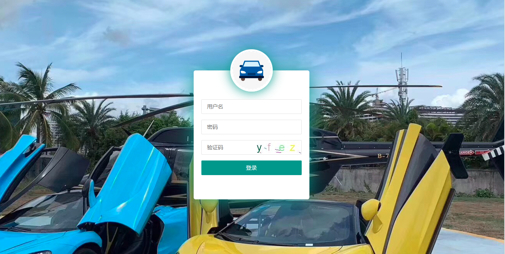
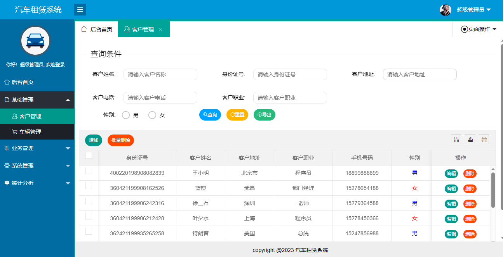
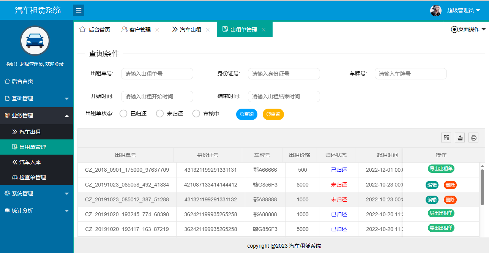
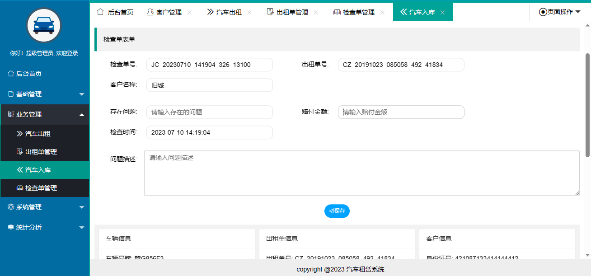
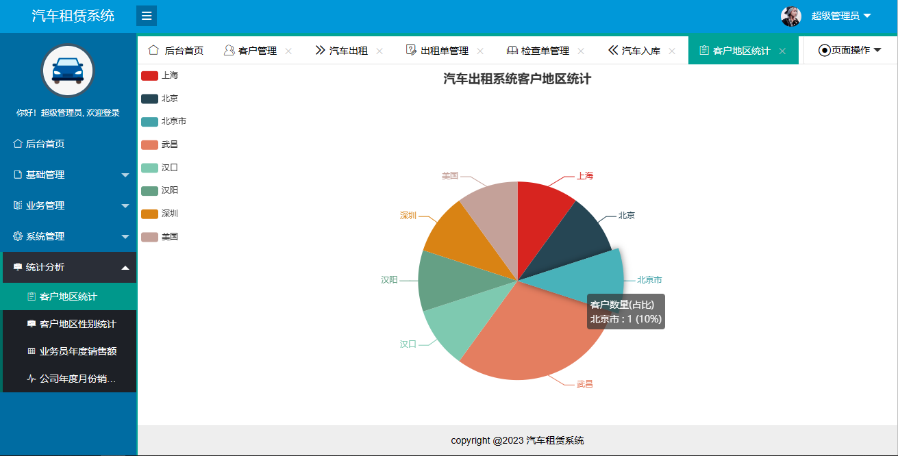
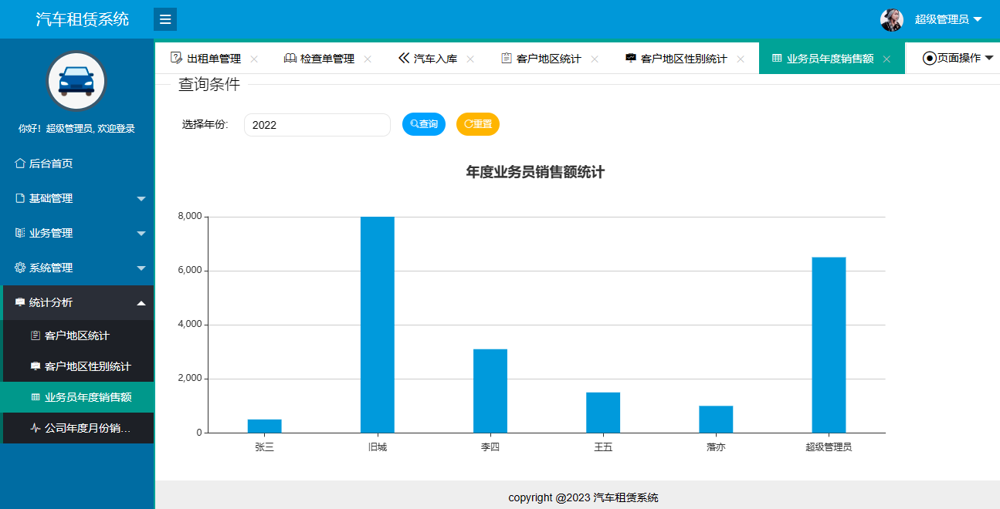
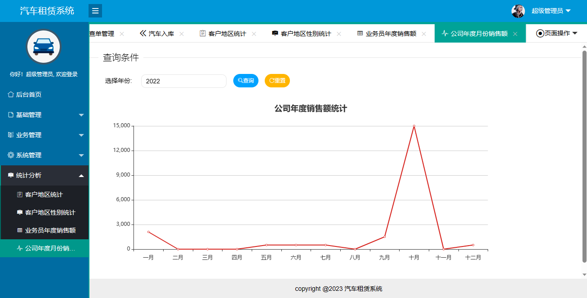

SSM 汽车租赁系统
一、项目介绍
89
汽车租赁系统基于 Spring+SpringMVC+Mybatis 开发，系统使用 shiro 框架做权限安全控制，超级管理员登录系统后可根据自己的实际需求配角色，然后新建用户选择角色即可。
超级管理员功能如下：
-
客户管理
-
车辆管理
-
汽车出租
-
出租单管理
-
汽车入库
-
检查单管理
-
统计分析
-
系统管理
-
公告管理
-
系统日志
二、技术框架
-
后端：Spring，Springmvc，Mybatis
-
前端：layui，echarts
三、安装教程
-
用 idea 打开项目
-
在 idea 中配置 jdk 环境
-
配置 maven 环境并下载依赖
-
配置 tomcat8.0
-
新建数据库，导入数据库文件
-
在 db.properties 文件中将数据库账号密码改成自己本地的
-
系统的静态资源存储在 D 盘，如果你的电脑没有 D 盘，则需要改成其他盘，具体位置在 file.properties，将文件里面的 D:/upload 改成你本地的即可。
-
启动运行，访问
http://localhost:8080
, 管理员账号密码 admin/123456
四、项目截图






